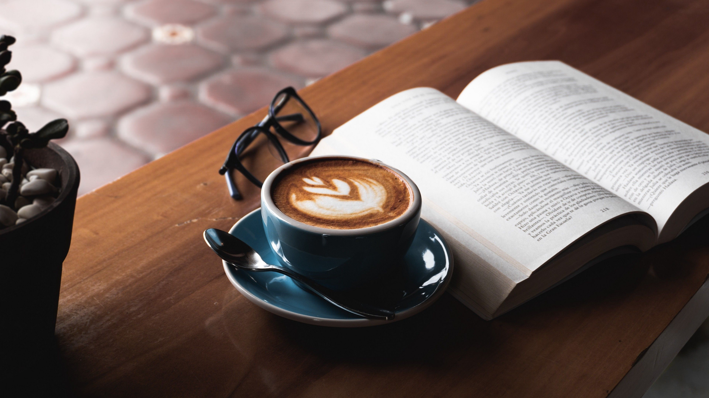

Welcome to The Coffee House.
The most renowned literary café in the Amsterdam. The meeting place for intellectuals, politicians and businessmen who have left fragments of their greatness in its rooms. One of the most successful examples in the Netherlands of a European-inspired literary café, temple of the international intellectual elite. The Coffee House. has always been the café frequented by the European elites visiting the Netherlands.
Great minds sat here
The wording of literary coffee that has always been attributed to The Coffee House. has a much deeper meaning than a simple name because it embodies one of the most precious aspects of the place, what makes it an invaluable heritage for the city of Amsterdam. This name, in fact, has to do with history, with the set of events that unfold relentlessly and that, little by little, place a new piece in its course.